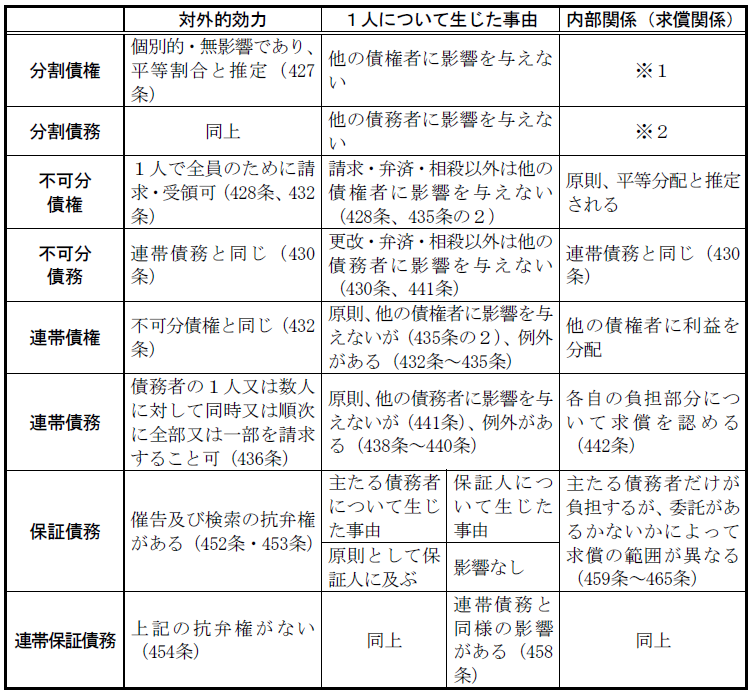
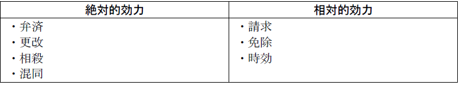

第４編 債権総論
第３章 多数当事者の債権関係
：１つの債権関係について、当事者の一方又は双方が複数いる場合
①分割債権・債務関係、②不可分債権・債務関係、③連帯債権・債務関係、④保証債務関係

※１ 内部関係が平等の場合には、他の債権者に分与する必要はない。
※２ 内部関係が平等の場合には、他の債務者に求償することはできない。
第１節 分割債権・債務関係
：１個の給付が、各債権者又は各債務者に分割される場合
多数当事者の債権関係では、分割債権関係が原則とされる（427条）。これは個人主義的思想の現れである。
多数者に分割された債権又は債務は、相互に全く独立したものとして取り扱われる。
1. 対外的効力
各債権者は自分の債権だけを単独で行使でき、また各債務者は自分の債務だけを弁済すればよい。各債権又は各債務の割合は、別段の意思表示がない限り平等とされる（427条）。
ただし、１個の双務契約の当事者が数人いる場合、契約の解除はすべての債権者から又はすべての債務者に対してしなければならない（544条）。
2. １人について生じた事由
１人の債権者又は債務者について生じた事由は、その債権者又は債務者に対して効果を生ずるだけで、他の債権者又は債務者に何の影響も及ぼさない。
第２節 不可分債権・債務関係
1. 意義
：１個の不可分給付について、複数の債権者がある場合。連帯債権の規定(433条、435条を除く)を準用。
2. 成立
不可分債権は債権の目的が「性質上不可分である場合」のみに限定されており（428条）、意思表示による不可分債権とされていたものは、連帯債権となる。
ex．共有者の所有権に基づく共有物返還請求権は性質上の不可分債権である（大判大10.３.18）。
3. 効力
(1) 対外的効力
各債権者はすべての債権者のために履行を請求し、債務者はすべての債権者のために各債権者に対して履行をすることができる（428条、432条）。
(2) １人について生じた事由
(a) 絶対的効力を生じる事由（428条、432条）
ⅰ 請求及びその効果（時効更新・履行遅滞など）
ⅱ 弁済及びその効果（弁済の提供・供託・受領遅滞など）
ⅲ 相殺及びその効果
(b) 相対的効力を生じる事由
請求、履行及び相殺以外の事由は、他の債権者に対して影響を及ぼさない（428条、435条の２）。
ex．更改、免除、混同、代物弁済、時効の完成
(3) 内部関係
不可分債権について単独で履行を受けた債権者は、他の債権者に対して、内部関係の割合に応じて、受領した給付を分与しなければならない。
4. 連帯債権(432条～435条の2)
(1) 意義
債権の目的がその性質上可分である場合において、法令の規定又は当事者の意思表示によって数人が連帯して債権を有する場合
ex．債権の二重譲渡において、確定日付のある証書による通知が同時到達した場合
(2) 効力
ア 対外的効力
各債権者は、全ての債権者のために全部又は一部の履行を請求することができ、債務者は、全ての債権者のために各債権者に対して履行をすることができる(432条)。
イ １人について生じた事由
（ア）絶対的効力を生じる事由
弁済(432条)、請求(432条)、更改・免除(433条)、相殺(434条)、混同(435条)
（イ）相対的効力を生じる事由
（ア）の場合を除き、他の連帯債権者に対してその効力を生じない。ただし、他の連帯債権者の１人及び債務者が別段の意思を表示したときは、当該他の連帯債権者に対する効力は、その意思に従う(435条の2)。
ウ 内部関係
債務者からの弁済を受領した債権者は、他の債権者に利益を分配すべきである。
1. 意義
：１個の不可分給付について数人の債務者がいる場合
2. 成立
給付の目的が、性質上不可分であること（428条参照）。
ex．共有者全員が共有物引渡義務を負う場合（大判大12.２.23）
不可分な給付の対価は性質上不可分債務とされる。
ex.ＡＢが共同でＣから家屋を賃借した場合におけるＡＢのＣに対する賃料
支払債務は、不可分債務である（大判大11.11.24）。
3. 効力
(1) 対外的効力
債権者は、１人の債務者に対して、又はすべての債務者に対して同時に若しくは順次に、全部又は一部の履行を請求することができる（430条、436条）。
(2) １人について生じた事由
(a) 絶対的効力を生じる事由
ⅰ 履行（弁済・供託）とその提供及びその効果
ⅱ 代物弁済・相殺・更改
(b) 相対的効力を生じる事由
債権の満足を目的とする事由以外の事由は、相対的効力を生じるにとどまる（430条、441条）。
(3) 内部関係
不可分債務の履行をした債務者は、他の各債務者に対して、内部関係（負担部分）の割合に応じて、求償することができる（430条、442条）。
第３節 連帯債務
1. 意義
：数人の債務者が、同一内容の給付について、各自が独立して全部の給付をしなければならない債務を負担し、しかもそのうちの１人の給付があれば他の債務者も債務を免れる多数当事者の債務関係
2. 性質
(1) 連帯債務は債務者の数に応じた多数の独立した債務である。保証債務におけるように各債務の間には主従の別がない。
(a) 連帯債務者の１人について法律行為の無効又は取消しの原因があっても、他の連帯債務者の債務の効力には影響を及ぼさない（437条）。連帯債務が１個の法律行為によって発生した場合でも、連帯債務は債務者の数に応じた多数の独立した債務だからである。
(b) 各債務者の債務はその態様を異なるものにすることができる。各人の負担する債務の額、利率、条件、期限が異なってもかまわない。
(c) 連帯債務者の１人についてだけ保証債務を成立させることができる（464条参照）。
(d) 連帯債務者の１人に対する債権だけを分離して譲渡することができる。
(2) 各債務者は全部の給付をなすべき義務を負う。
連帯債務者の１人が債権者に対して債権を有していた場合、自己の負担部分を超えて相殺することができる（439条１項）。
(3) 債務者の１人の給付があれば全債務者の債務が消滅する。
3. 特徴
連帯債務関係の本質的特徴は、債務者間の主観的共同関係にある（多数説）。そこで、①１人につき生じた事由が一定の範囲で他の債務者にも影響を及ぼし（438条～440条）、②弁済をした債務者は他の債務者に求償できる（442条～445条）。
1. 法律行為による成立
契約によることが普通だが、遺言によって成立させることもできる。
契約によって連帯債務が生ずる場合は、その契約は必ずしも１個であることを要せず、当事者は順次に別個の契約をして連帯債務を生じさせることができる。
2. 法律の規定による成立
ex．日常家事債務についての夫婦の責任（761条）
1. 対外的効力
債権者は、１人の債務者に対して、又はすべての債務者に対して同時に若しくは順次に、全部又は一部の履行を請求することができる（436条）。
2. １人について生じた事由
(1) 絶対的効力を生じる事由
(a) 弁済、又はそれと同視すべき事由（代物弁済・供託）
(b) 更改（438条）
438条は更改に絶対的効力を認める。同条以下の絶対効の規定の趣旨は、主として連帯債務者間の求償関係の簡易な処理にある。同条により、Ａ・Ｂ・Ｃが甲に対し90万円の連帯債務を負担している場合に、Ａ甲間でこれを不動産引渡債務に更改する契約をすれば、反対の特約のない限り、Ｂ・Ｃも債務を免れる。その後、ＡはＢ・Ｃに対してそれぞれの負担部分だけの求償をすることができる。
なお、本条は任意規定であり、相対効とする特約も有効である（通説）。
(c) 相殺（439条）
439条１項は、連帯債務者の１人が、債権者に対して反対債権を有し、これを自働債権として相殺をするときは、他の連帯債務者も債務を免れるとする。これは、相殺が弁済と同じように債権者の満足という連帯債務の目的を達成させるものとして、絶対的効力を認めた当然の規定である。従って、連帯債務者の１人が債権者に対して債権を有していれば、自己の負担部分を超えても相殺することができる。
また、同条２項は、決済の簡易化と、債権者の無資力による危険から反対債権を有する連帯債務者を保護することを目的として、反対債権を有する連帯債務者の１人が自ら相殺を援用しなくとも、他の連帯債務者がその連帯債務者の負担部分の範囲内で、履行拒絶権の限りで保護されることを認めたものである。
(d) 混同（440条）
ⅰ 債権と債務が同一人に帰属することを混同といい、この場合に債権を存続させても無意味なので、債権は消滅する（520条）。同条も、当事者間の法律関係の決済を簡易にするため認められたものである。
ⅱ 連帯債務者Ａ・Ｂ・ＣのうちＡが、債権者甲を相続したり、自分たちに対する甲の債権を譲り受けたときは、混同（520条）が生じ、Ａは弁済したものとみなされるから、Ｂ・Ｃは債務を免れる。ただその負担部分だけＡから求償を受けることになる
(2) 上記(a)～(d)以外の事由は相対的効力を有するのみである（441条）。
相対的効力しか生じない事由の主要なものは、履行請求、 免除、 時効の完成、時効の更新、時効の完成猶予、時効利益の放棄、債権譲渡の対抗要件、債務者の過失、履行遅滞などである。
【連帯債務の効力】

3. 内部関係
(1) 通知をした場合の求償権
連帯債務者の１人が債務を弁済し、その他自己の財産をもって共同の免責を得たときは、他の連帯債務者に対して、各自の負担部分につき求償権を有する（442条１項）。
(2) 通知を怠った場合の求償権の制限
(a) 事前の通知を怠った場合（443条１項）
他の連帯債務者があることを知りながら、連帯債務者の１人が共同の免責を得ることを他の連帯債務者に通知しないで弁済をし、その他自己の財産をもって共同の免責を得た場合において、他の連帯債務者は、債権者に対抗することができる事由を有していたときは、その負担部分について、その事由をもってその免責を得た連帯債務者に対抗することができる。（443条１項前段）。ただし、相殺権を有していたことを理由にその免責を得た連帯債務者の求償を拒んだときは、求償を拒まれた連帯債務者は、過失の有無にかかわらず、債権者に対し、相殺によって消滅するはずであった債務の履行を請求することができる（443条１項後段）。
(b) 事後の通知を怠った場合（443条２項）
他の連帯債務者があることを知りながら連帯債務者の１人が弁済し、その他自己の財産をもって債務を消滅させたのに、その旨を他の連帯債務者に通知することを怠ったために、他の連帯債務者がそれを知らずに弁済等をしたときは、弁済等をした連帯債務者は自分の弁済等を有効であったものとみなすことができる（443条２項）。
なお、判例・通説は第２の弁済が有効とされるのは過失のある第１弁済者と善意の第２弁済者との間においてのみであり、すべての債務者に対する関係においてではない（相対効）とする（大判昭７.９.30）。
そこで、債権者に対する関係では第１の弁済があくまで有効であるが、第１弁済者は第２弁済者の弁済を不当利得として債権者に返還請求することができる。また、他の債務者に対しては、依然、第１弁済者が求償権を有する。
(c) 事前及び事後の通知を怠った場合
自己の免責行為が有効であることを主張できるのは、第２弁済者が事前の通知を怠らなかった場合のみであり、これを怠った場合には、443条１項・２項とも適用がなく、原則どおり第１弁済者の弁済が有効となる（最判昭57.12.17）。
(3) 無資力者がある場合の求償権の拡張（444条）
連帯債務者の中に無資力者がいるときは、その償還することができない部分は、求償者及び他の資力ある債務者との間で、各自の負担部分に応じて分割して負担する（444条１項）。負担部分を有するのが無資力になった者だけであった場合には、残りの連帯債務者で平等に分担する (444条２項)。
ただし、求償者に過失があるとき（例えば、求償者が直ちに請求すれば求償できたのにその時期を逸したため、他の連帯債務者の１人が無資力になったとき）は、他の連帯債務者に分担を請求することができない（444条３項）。
(4) 連帯の免除
：債権者が債務者に対しその債務額を負担部分に制限する旨の意思表示
(a) 絶対的連帯の免除
：総債務者について連帯の免除をする場合
→ 連帯債務は分割債務となる。負担部分ゼロの者は完全に債務を免れる。
(b) 相対的連帯の免除
：連帯債務者のうち一部の者についてのみ連帯の免除をする場合
→ 免除を受けた者だけが分割債務を負担し他の債務者は依然として全部給付の義務を負う。従って、求償関係も存続し、免除を受けた債務者に対しても求償することができる。
(5) 連帯債務者の１人との間の免除と時効
免除・時効完成が相対的効力事由なので（441条本文）、連帯債務者の１人について免除・時効完成があっても求償権行使が可能である（445条）。
Ｑ 連帯債務者の１人が死亡し、共同相続された場合はどうなるか。
→ 共同相続人は各自分割されたものを承継し、その範囲で本来の債務者とともに連帯債務者となる（最判昭34.６.19）。
cf. 不真正連帯債務
1. 意義
：複数の債務者が同一内容の給付につき全部を履行しなければならない義務を有し、１人の債務者の履行によって全債務者が債務を免れることでは連帯債務と同様であるが、債務者間に共同目的による主観的な関連がない点が連帯債務と異なる多数主体の債務関係のことを旧法の下では不真正連帯債務と呼称されていた。基本的には連帯債務に関する規定が適用される。
2. 成立
共同不法行為者の賠償義務（最判昭57.３.４・通説）、法人の賠償義務（一般法人法78条、197条）と理事その他代表機関の賠償義務（709条）、被用者の賠償義務（709条）と使用者又は監督者の賠償義務（715条１項、２項）、及び使用者の賠償義務（715条１項）と監督者の賠償義務（715条２項）などがある。
3. 効力
(1) 対外的効力
債権者は、債務者の１人に対して、あるいは同時若しくは順次にすべての債務者に対して、全部又は一部の履行を請求することができる（連帯債務と同じ、436条）。
(2) １人について生じた事由
不真正連帯債務は連帯債務と同じく客観的に単一の目的を有するので債権を満足させる事由（弁済、代物弁済、相殺、供託）は、絶対的効力を有する。
これに対し、債権を満足させる事由以外のものは、連帯債務と同様、相対的効力を有するにとどまるのが原則である（441条）。例えば、不真正連帯債務者の１人に対する免除は、他の残債務を免責する意思があると認められるときを除き、他の不真正連帯債務者に効力は及ばない（最判平６.11.24、最判平10.９.10）。